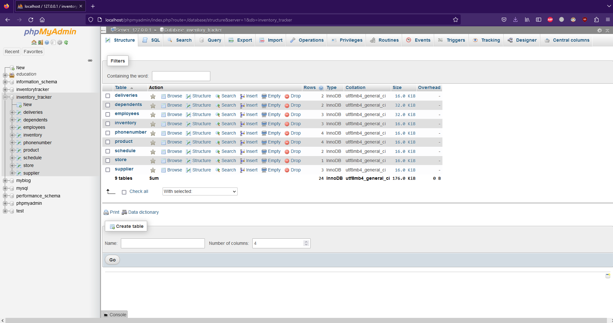
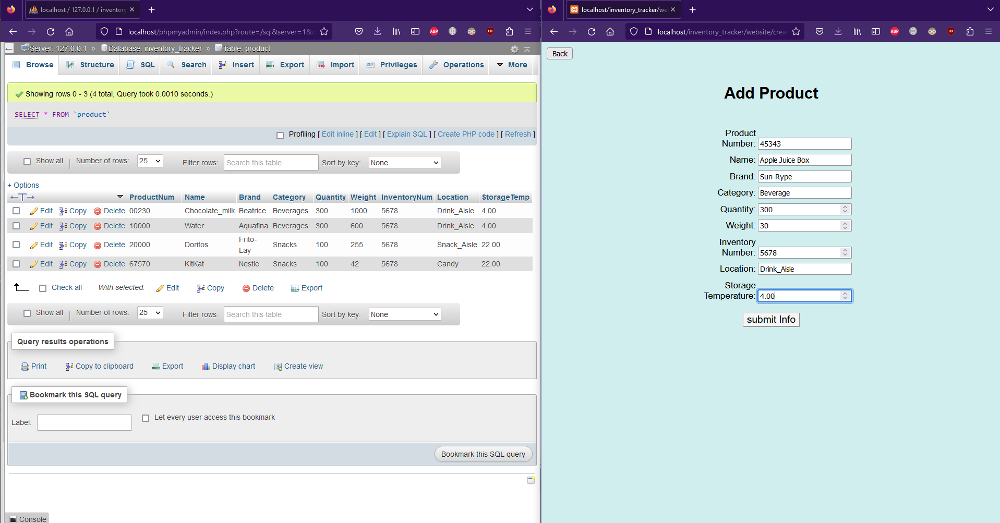
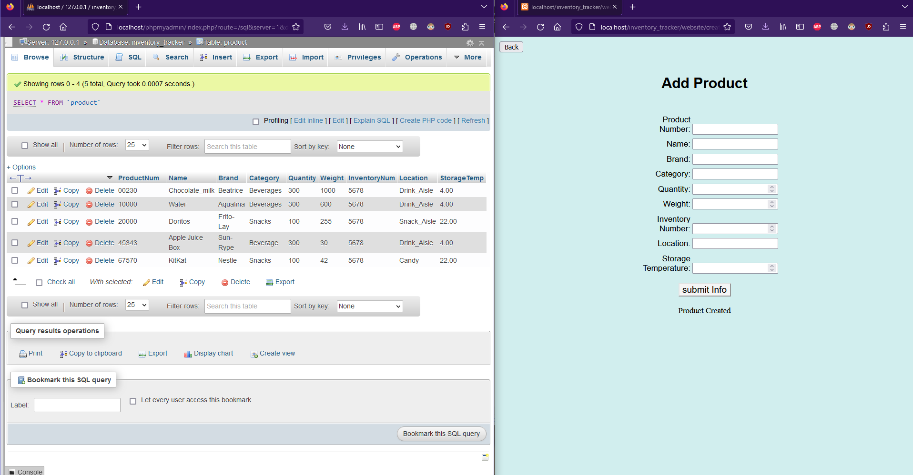
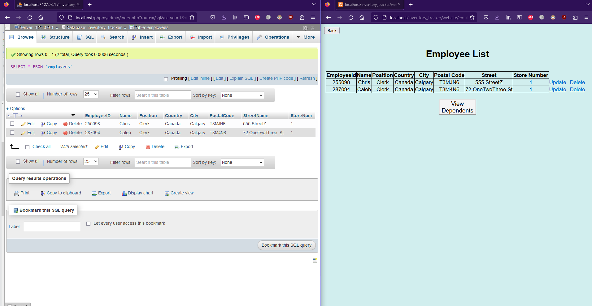
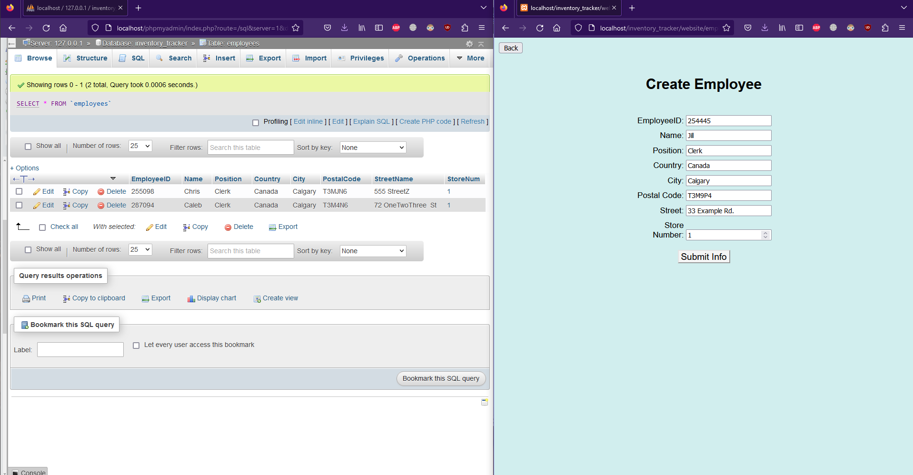
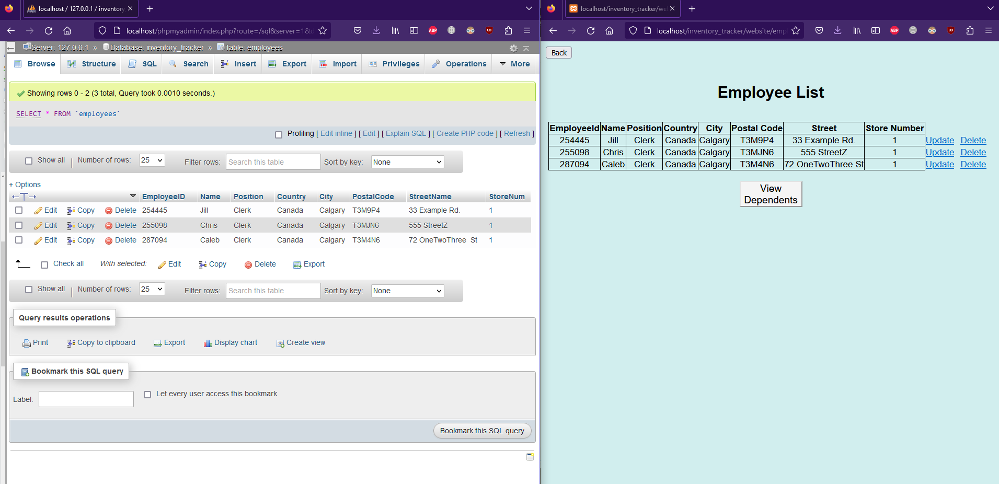
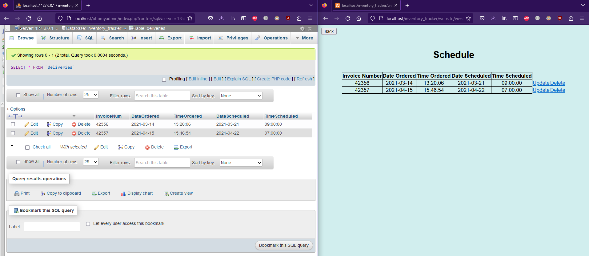

To access the database and populate its tables, we used SQL, creating an SQL file an populating it with starting values.
Once initialized, we imported it to a a web server program XAMPP and PHPmyAdmin to make API calls to and from the database.
Once the database in PHPmyAdmin had the SQL file imported, we could use that interface to add and delete relations from tables
using SQL queries.

The backend was all built using PHP, all of the different types of operations being handled by this language. To make calls and queries easier,
we created a simple front end interface using HTML and CSS to test API calls from a different interface than the PHPmyAdmin method.
The database keeps track of several parts of a store system, including inventory, products on display, deliver schedules and employee data.
The user of the interface would be able to update the stock of items on shelves, check data of each item, and modify items as they need.
Similarily, they can also do the same for employees, adding and deleting them or viewing data of the current employees. The schedule part of
the system is also similar, where the user can create, delete or update their deliver schedules.


Employee Section



Schedule
